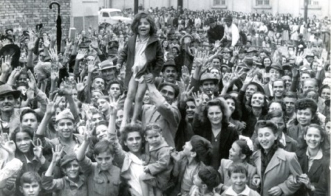

Decreto-lei n.º 9.070, de 15 de março de 1946 - condições de realização de greves.

Antes da promulgação da Constituição Federal de 1946, o presidente Eurico Gaspar Dutra promulgou o Decreto-lei n.º 9.070/46, que dispunha sobre as condições de realização de greves e as proibia para as consideradas “atividades essenciais”; sendo elas as “atividades profissionais desempenhadas nos serviços de água, energia, fontes de energia, iluminação, gás, esgotos, comunicações, transportes, carga e descarga; nos estabelecimentos de venda de utilidade ou gêneros essenciais à vida das populações; nos matadouros; na lavoura e na pecuária; nos colégios, escolas, bancos, farmácias, drogarias, hospitais e serviços funerários; nas indústrias básicas ou essenciais à defesa nacional.” A extensão e amplitude da lei atingiam quase todas as funções de trabalho existentes na época, e mesmo que o direito à greve tenha sido previsto no texto constitucional de 1946, esse decreto continuou em vigência durante o Governo Dutra, impondo duras restrições ao exercício de movimentos grevistas.